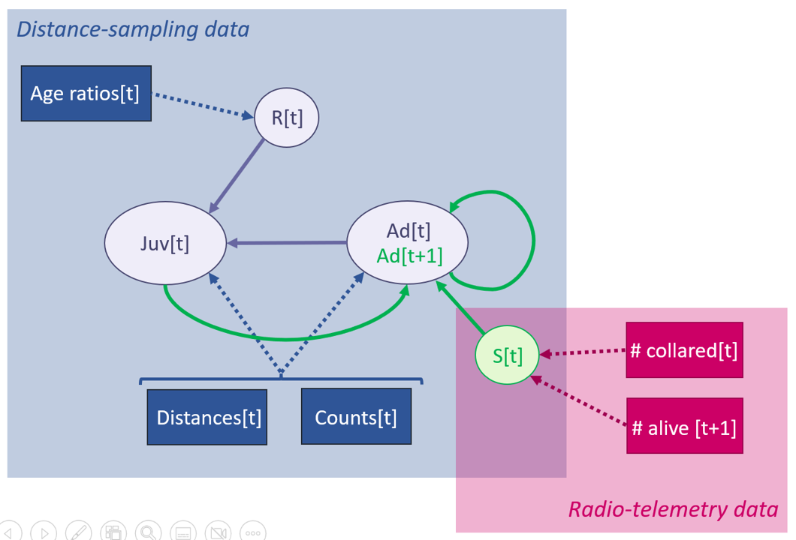
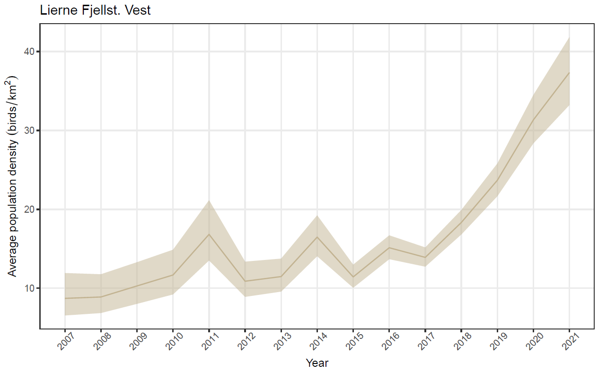
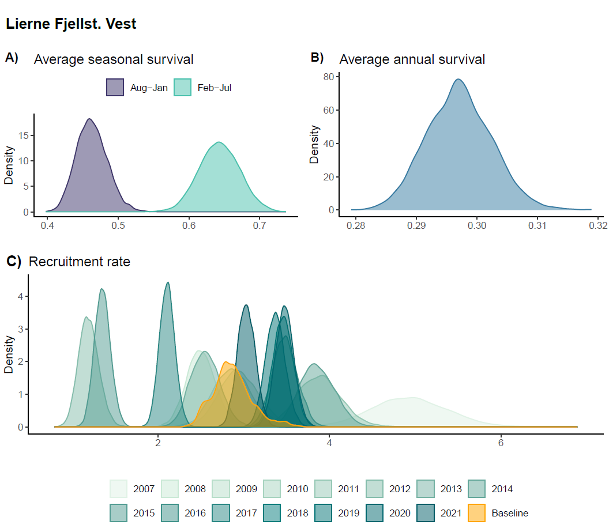
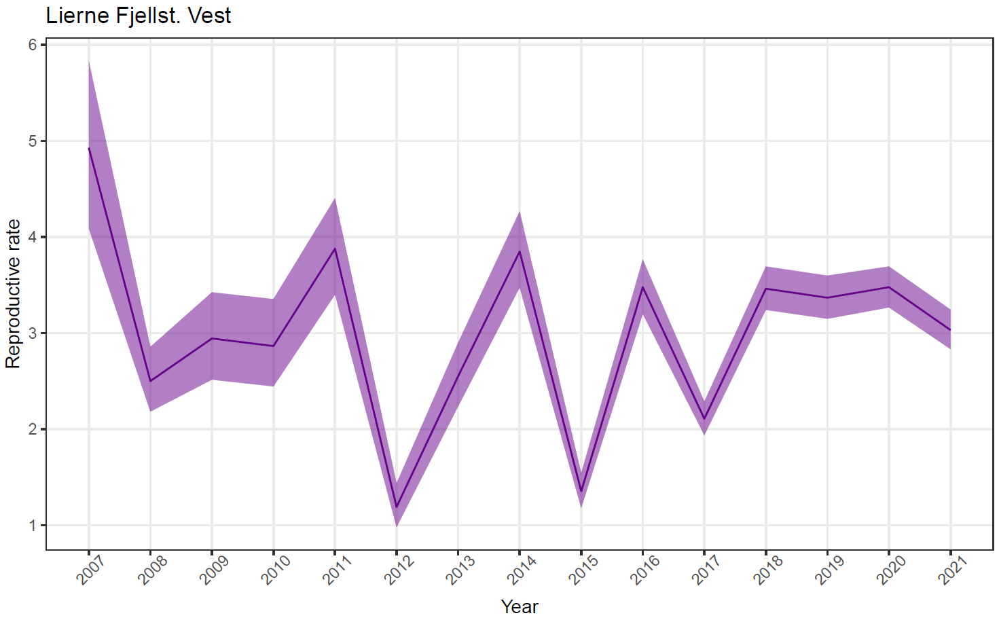
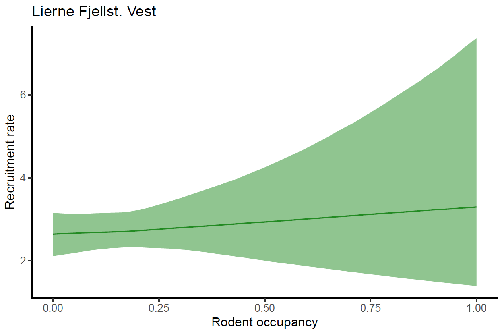
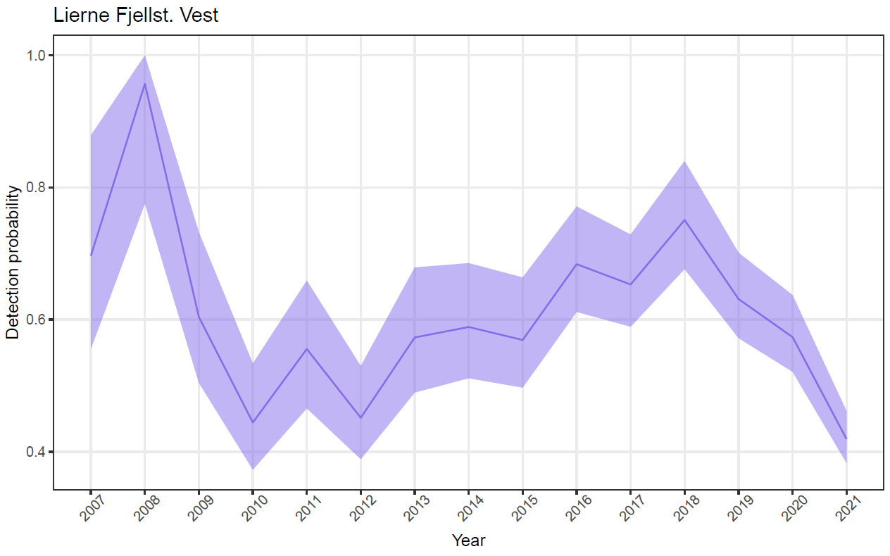

An integrated distance sampling approach for modelling age-structured populations
Introduction
Estimating abundance and demographic rates for wildlife populations is a key element of population ecology, demography, eco-evolution research, conservation and wildlife management (refs). Tremendous progress during the last few decades both in terms of new technologies that allow new types of field data being collected (e.g. eDNA ref; camera traps; refs) and the statistical machinery available to interpret the ecological and demographic signals in the data (refs). Nevertheless, large scale and long term data sets are still relatively rare (ref), due to high costs of field data collection.
A cost efficient and well documented approach suitable is the use of line transect surveys. However, because the detectability is often less than 1 and variable between years and habitats,
Importance of abundance trends and demography
Short about methods – detection probability – marked vs unmarked animals
Approaches to estimate abundance and demography from unmarked animals
Distance sampling (DS) models have been used for estimating animal abundance in a wide range of contexts and for a variety of taxa (Buckland et al. 2015). In recent years, they have been extended and also applied for estimating changes in abundance over time in open populations by embedding a hidden state model representing population dynamics (Moore and Barlow 2011; Sollmann et al. 2015). These latter frameworks may allow to accurately quantify population changes but provide little information on the drivers of these changes, i.e. the underlying vital rates. Concurrent with the development of more sophisticated DS models, another group of models has emerged and gained popularity, not least for their ability to disentangle demographic processes underlying population dynamic: integrated population models (IPMs, Schaub and Kéry 2021). Through joint analysis of multiple datasets, IPMs allow simultaneous estimation of population size and composition, as well as all vital rates that form part of an underlying typically age- or stage-structured population model. Since both DS models and IPMs estimate population size/density, a combination of the two frameworks has the potential to provide good estimates of both population- and demographic parameters and maximizing knowledge gained through transect surveys by augmenting them with other available data (e.g. Schmidt and Robison 2020). In this study […]
Here, we will present a novel integrated population model based on distance sampling line transect survey data and demographic data from marked birds.
- Estimate parameters with and without augmentation with demographic data – compare estimates and precision
- Estimate latent variable (juv summer survival) – compare to literature values
- Temporal variation in S and R – via random effects models
- Simulate - robustness
Methods
An integrated distance sampling model
Our open population integrated distance sampling model consists of two major components: a latent structured population model and a set of likelihoods for data originating from distance sampling surveys and auxiliary survival monitoring (radio-telemetry in the example case).
Age-structured population model
The population model follows a post-breeding census and includes two age classes: juveniles (young of the year) and adults (> 1 year of age, Figure 1). This structure is inspired by earlier models for our focal species, the willow ptarmigan (+ref), and is commonly used for populations of passerine and game birds (Williams, Nichols, and Conroy 2002; Schaub and Kéry 2021). In the context of our willow ptarmigan case study (see below), the census falls into late summer and coincides with the annual distance-sampling survey in August.
Both juveniles and adults survive from year \(t\) census to year \(t+1\) census with survival probability \(S_t\). As ptarmigan can reproduce already at 1-year old, all survivors then produce offspring in late June which recruit into the population as juveniles just prior to the census in year \(t+1\) according to a recruitment rate \(R_{t+1}\). The changes in densities (numbers) of juveniles and adults in the population, \(D_{juv}\) and \(D_{ad}\), can thus be expressed as
\[ \begin{aligned} D_{juv, t+1} & = D_{ad,t+1} * R_{t+1} \\ D_{ad, t+1} & = S_t * (D_{juv,t} + D_{ad, t}) \end{aligned} \]
or, alternatively, in matrix notation as
\[ \left[ \begin{array}{} D_{juv,t+1} \\ D_{ad,t+1} \end{array} \right] = \left[ \begin{array}{cc} S_t*R_{t+1} & S_t*R_{t+1}\\ S_t & S_t \end{array} \right] \left[\begin{array}{} D_{juv,t} \\ D_{ad,t} \end{array}\right] \]
Note that recruitment rate \(R\) is defined as juveniles/adult (not juveniles/female). We also make the simplifying assumption that there is no age- or sex-dependence of vital rates, but this assumption could be relaxed by including additional auxiliary data (Sandercock et al. 2011; Israelsen et al. 2020).

Likelihoods for distance sampling data
The implementation of the modelling framework we present makes three assumptions about the distance sampling survey: 1) the survey consists of line transects, 2) animals may be detected alone or in groups, and 3) juveniles and adults can be distinguished during surveys. These assumptions are inspired by our willow ptarmigan case study (details below). Our model includes three likelihoods for different components of the age-structured distance sampling data. First is the likelihood for the perpendicular detection distances from line transect, \(y\), which are linked to distance-dependent detection probability \(p\) through a half-normal detection function:
\[ \begin{equation} p = exp(-\frac{y^2}{2\sigma^2}) \end{equation} \] where \(\sigma\) is the half-normal detection parameter. We assumed \(\sigma\) to vary among years (index \(t\)) but not transect lines or animal group size. Following Moore and Barlow (2011), the resulting \(\sigma_t\) can be used to calculate effective strip width (\(esw_{t}\)) and, consequently, average detection probability per line transect with a truncation distance \(W\) according to:
\[ \begin{aligned} esw_t & = \sqrt{\frac{\pi * \sigma_{t}^2}{2}} \\ \hat{p_t} & = esw_t/W \end{aligned} \] The average detection probability \(\hat{p_t}\) is an integral part of the second data likelihood which relates the observed number of animals in each age class \(a\), \(obsN_{a,j,t}\) (\(j\) = transect) to the corresponding true number per transect, \(N_{a,j,t}\):
\[ \begin{equation} obsN_{a,j,t} \sim Poisson(\hat{p_t}*N_{a,j,t}) \end{equation} \] \(N_{juv,j,t}\) and \(N_{ad,j,t}\) are then linked back to the population model by converting them to densities through multiplication with \(2L_{j,t}W\) (where \(L_{j,t}\) is length of transect \(j\) in year \(t\)).
The third data likelihood focuses on the counts of adults (\(obsAd_{j,t}\)) and juveniles (\(obsJuv_{j,t}\)) observed during the distance sampling surveys and links them to time-specific recruitment rate:
\[ \begin{equation} obsJuv_{j,t} \sim Poisson(R_t*obsAd_{j,t}) \end{equation} \]
Likelihood for radio-telemetry data
The final likelihood is for the auxiliary telemetry data. It is set up under the assumption of perfect detection, and hence known fates, of animals bearing transmitters and links the numbers of animals released at the start of season \(k\) of year \(t\) to the number of survivors at the end of the same season:
\[ \begin{equation} survivors_{k,t} \sim Binomial(released_{k,t}, Sk_t) \end{equation} \] Here, \(Sk_t\) is the seasonal survival rate, and annual survival rate, \(S_t\) is calculated as \(S1_t * S2_t\).
Hierarchical models with time-variation in parameters
Vital rates (survival probabilities \(S\), recruitment rates \(R\)), detection parameters (half-normal detection parameters \(\sigma\)), and initial population densities can all be modelled as time-dependent in our framework. For both the tests with simulated data and the case study described below, we implemented log-normally distributed random year effects on all parameters except survival, which was set to be constant. In the case study, we additionally included an effect of rodent occupancy (see details below) on log recruitment rates, resulting in the following model:
\[ \begin{equation} log(R_t) = log(\mu_R) + \beta*RodentOcc_t + \epsilon_t \end{equation} \] where \(\mu_R\) is the baseline recruitment rate, \(\beta\) the slope of the effect of rodent occupancy, and \(\epsilon_t\) the normally distributed random effects.
Model testing with simulated data
TBA
Field data (case study)
[Add some basic information about willow ptarmigan in Norway, plus Lierne study area]
The two datasets used for the case study were i) data from a line transect survey program targeting willow ptarmigan operated as part of the natural resources management authorities, and ii) data from an individual based research project based on radio collared willow ptarmigan. The temporal coverage of the two data sets partially overlap, with the line transect survey spanning 2007-2019 (and ongoing) and the individual based data spanning 2015-2019 (and ongoing).
Line transect survey data were collected in August each year, prior to the annual autumn harvest season. Line transects are surveyed by educated volunteers, using pointing dogs to located the birds. When located, the geographical coordinate, perpendicular distance from the sampling line, the number of birds as well as the age (juvenile and adult) and sex of the birds are recorded. [Some more information on the surveys, e.g. why are individuals in groups, how are sexes and age classes distinguished, etc.] Additional information about the surveys are found in Nilsen et al. (2020) and Bowler et al. (2020). [Add sample sizes and additional information on data processing/storage post collection, i.e. how do volunteers report data, storage in hønsefuglportalen, quality control, pushes to LivingNorway and GBIF].
The individual longitudinal study based on radio collared willow ptarmigan was conducted in 2015-2020. Each winter (in February-March), willow ptarmigan were located at night using snowmobiles and large hand nets with prolonged handles, as described in Israelsen et al. (2020). To prevent birds from flying off before the field personnel were close enough to capture them, a high-powered head lamp was used to dazzle the birds. After capture, birds were placed in an opaque bag to reduce stress. Before releasing the birds, they were fitted with a uniquely numbered leg ring (~ 2.4g) and a Holohil RI-2BM or Holohil RI-2DM radio transmitter (~ 14.1g). The radio transmitters had an expected battery lifetime of 24 months (RI-2BM) or 30 months (RI-2DM), and included a mortality circuit that was activated if a bird had been immobile for 12 hours. We monitored the birds throughout the year, by triangulation from the ground at least once a month for 10 months of the year (February – November) by qualified field personnel. If a mortality signal was heard from the transmitter, we recovered it as soon as possible to determine cause of death. A number of birds dispersed out of the main study areas and was thus out of signal range for field personnel on the ground. To avoid loss of data, we conducted aerial triangulation using a helicopter or airplane three times a year (May, September and November) in the years 2016-2020.
[Figure 2: Map of Lierne study area?]
Bayesian implementation
We implemented the model in a Bayesian framework using NIMBLE (Valpine et al. 2017) in R version 4.2.2 (R Core Team 2022).
Results
Model performance on simulated datasets
[One or several figures of estimates vs. true values?]
Case study on willow ptarmigans in Lierne
Population density

Vital rates



Detection parameters
